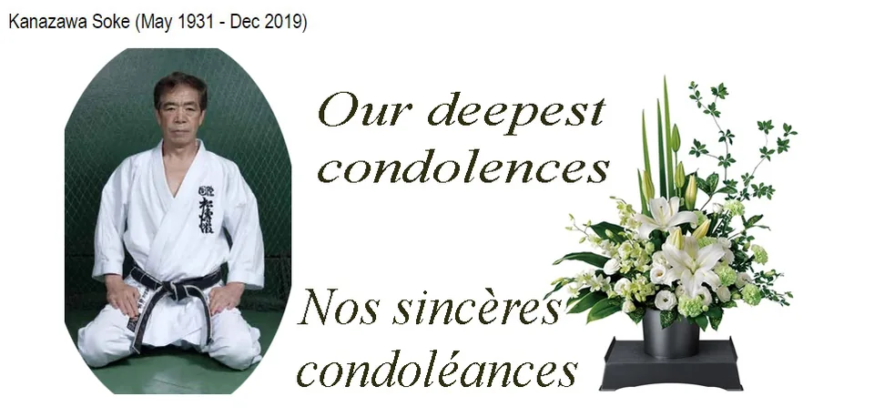

Le SKIF Poseidon Dojo presente ses sinceres condoleances a tous les disciples de Maitre KANAZAWA SOKE. Notre grand maitre est decede le 8 dec 2019 a Tokyo, Japon.
Deepest condolences to all KANAZAWA Sensei Students. Our Grand Master left us on Dec 8, 2019 in Tokyo, Japan.